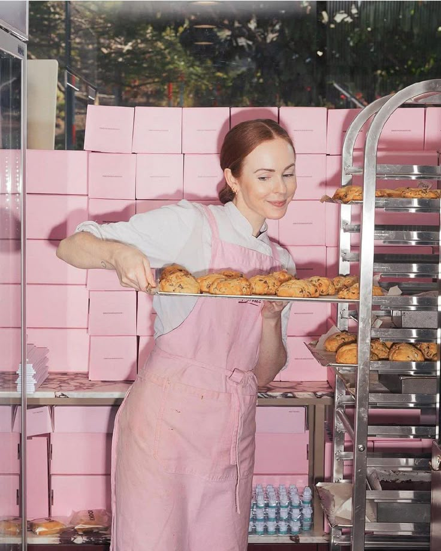
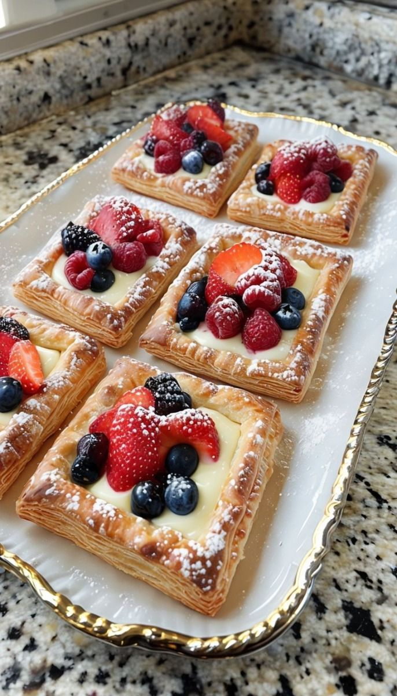
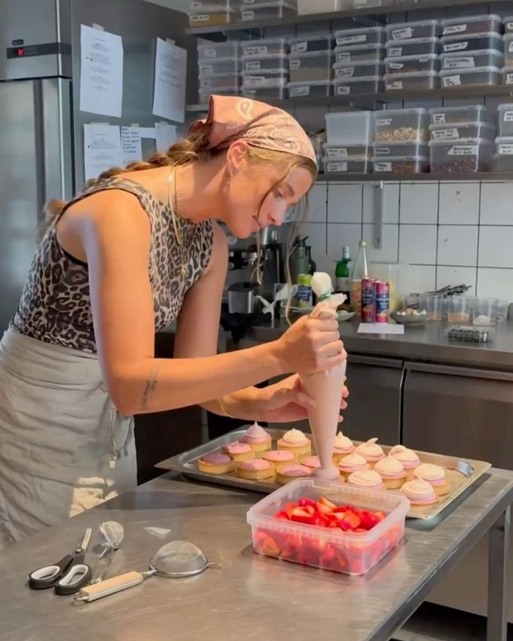

Fradel and Sweets is a part of the Fradel Group, headquartered in Mumbai,India. The group was established by Arthur Konklin, a westerner whose travel led to the discovery of his muse in 1980.
The company brand was launched with just three products — Chocolate Brownies, Chocolate chip cookies and oatmeal raisin cookies. While all other companies were focused on the quantity, Bakers aimed directly at individual,household kitchens and to provide desserts with the homemade touch.
The aim was to delight the customer with products that suit their palate and taste. To enjoy every meal, have fun every day.
Today we have around 15 products in a larger scale and the numbers are still growing. We aim to expand to other cities as soon as possible.